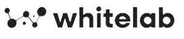

Trade Mark Journal No.2025/040 3 October 2025
UK00004237754 22 July 2025 (37,40,41,42,45)

- Class 37
- Consultancy on building and construction, also in the context of project development; Consultancy on maintenance and installation of machinery, fire alarm, smoke control, gas, electrical, ventilation, plumbing and ventilation systems, also in the context of project development; Construction works management; Consultancy in the installation of safety equipment; Consultancy and information on the construction and installation of infrastructures, dredging works, bridges, tunnel, roads, railways; Anti-legionella sanitisation and pest control; Technical information and consultancy on the above services.
- Class 40
- Decontamination of dangerous materials; provision of information on treatment of materials; soil, waste and water treatment services [environmental remediation services]; waste recycling consultancy; treatment of biopharmaceutical materials, consultancy on waste destruction; soil treatment services [environmental remediation]; treatment of materials including characterisation and anti-corrosion processes; treatment and purification of toxic materials, waste, water, soil, air; metal treatment; treatment and purification of air, water, land and soil; Soil and land remediation; Waste processing and treatment services; Waste management [recycling]; Waste purification through treatment and recycling of waste and waste materials; Incineration and destruction of waste and waste materials; Recycling of waste materials (dangerous), including through inactivation of collected waste materials by chemical, biological and/or physical treatment methods; Recycling of waste by separation of different waste materials and their treatment for reuse as raw materials; Briefing, information and advice on the above services.
- Class 41
- Training activities; Online training courses and non-downloadable online videos; Conducting training seminars; Organising, preparing and conducting workshops [training]; Organising and providing courses, training courses, seminars, conventions, training and upgrading; Professional training; Education and training services on health and safety at work; Education services on hygiene; Provision of training services on hygiene for industry; Consultancy services related to obtaining regulatory or governmental qualifications; Consultancy services related to all the above services.
- Class 42
- Materials testing; water analysis; chemical analysis; quality control testing services for industrial equipment; waterways quality analysis; quality control of goods and services; quality control analysis; scientific analysis; packaging and packaging material design; product design analysis; greenhouse gas emission analysis; environmental monitoring services; materials testing and analysis; technical and scientific monitoring consultancy; materials testing and evaluation; quality control checks on products; laboratory research in the field of cosmetics; testing, analysis and evaluation of third-party goods and services for certification purposes; product safety testing; evaluation of pharmaceutical products; sampling and analysis services for the evaluation of pollution levels; materials science and electrical engineering research; sampling and analysis services for contamination testing; testing and evaluation of product design; testing, analysis and evaluation of third-party products for certification purposes; chemical analysis and industrial research services; research into environmental protection and conservation; design and testing for the development of new products; design and development of control and analysis methods; industrial analysis services; assessment and detection of hazardous materials in real estate; environmental testing and inspection services; analysis of geological samples; consultancy on geological surveys, engineering surveys; laboratory services; Scientific and technological accreditation consultancy services, including the development and provision of standards and practices in the field of production, preparation and/or preservation of human and animal food by human and animal food processing industries to ensure compliance with laws and government regulations and industry practices, including quality control and quality assurance practices; Quality control for third parties, namely, provision of verification services to ensure that laboratories comply with good laboratory practices; Scientific and technical services related to the sensory impact of products and brands on consumers; Advice and industrial designs on packaging design; Research and development of new products for third parties; Quality studies and controls; testing, inspection, evaluation and accreditation of business systems, management systems, quality management systems, environmental management systems, production systems, methods and processes, all for the purpose of compliance with regulatory standards, for quality, quantity, performance or safety; testing, inspection, evaluation and accreditation of goods, materials, consumer products, automotive products, aerospace products, raw materials, minerals, food, beverages, medical products, pharmaceutical products, all for the purpose of compliance with regulatory standards, for quality, quantity, performance or safety; electrical, physical, chemical, metallurgical, mechanical and optical testing, inspection, evaluation and accreditation services, all for the purposes of compliance with regulatory standards, quality, quantity, performance or safety; quality and safety testing and evaluation and accreditation services; industrial and scientific research services; safety engineering services; industrial inspection services; technical inspection services; scientific inspection services; Quality inspection services; Environmental inspection services; Hygiene inspection services; Certification services; Technical evaluation services; Quality assessment services; Scientific evaluation services; Design or product development evaluation; Evaluation services concerning the application of industry standards; Quality verification services; Verification of technical data; Technical analysis services; Scientific analysis services; Technical analysis; Computer analysis; Authentication; Non-destructive testing services; Testing, inspection, certification, verification or analysis of business systems, management systems, quality management systems, environmental management systems, production systems, methods and processes, including supply chain management; Sustainability assurance services; Sustainability certification; Certification of corporate operational functions; Certification of corporate governance processes; Certification of business practices In relation to the following areas: Safety, Quality, Risk Management, Corporate Security, Regulatory Compliance, Personnel, Environmental Management, Social Welfare, Ethics, Governance, Communications and Sustainability; Environmental Analysis, Environmental Inspection, Environmental Certification Services, Environmental Audits; Environmental Analysis; Laser scanning services for mapping and surveying purposes; Laser scanning services for the production of 3D models of buildings, structures, industrial plants and ships; Container scanning; Quality and safety inspection and assessment; Review of quality control capabilities; Calibration [measurement]; Science and technology services; Forensic science for investigative purposes; Scientific and industrial research services; Corrosion investigation and testing services; Technical services for corrosion modelling and monitoring; Asset integrity management services, namely, inspection, monitoring, analysis and consulting services to ensure process safety and mechanical integrity for the oil and gas, utilities, infrastructure, transportation, legal and insurance fields; Pipeline integrity services, namely, pipeline inspection services; Materials testing and testing of new products for third parties, namely, stress testing of materials and products; Preparation of scientific study protocols; Project management services; Environmental monitoring and hazard assessment; Design services; Safety design services; Floor plan design services; Expert witnessing [engineering work]; Engineering services; Preparation of technical analyses and reports; Geological and geotechnical services; Platform services as a service (paas) with computer software platforms for use in the management, achievement and authentication of security, quality, sustainability and regulatory standards; Computer services in the form of software as a service (SaaS), namely, provision of software and services using software for access or downloading or use by third parties; Computer services in the form of software as a service (SaaS), namely, on-line provision (from websites or via the Internet) of software resources for third parties; Cloud computing services using software for the management, achievement and authentication of safety, quality, sustainability and regulatory standards; Temporary use of on-line, non-downloadable software for cloud computing for use in the management, achievement and authentication of safety, quality, sustainability and regulatory standards; Analysis and industrial research services including chemical analysis services, mechanical testing, structural examinations and non-destructive testing; Design and development of hardware and software; Testing services for quality or standards certification; Product certification; Water, environmental and food testing; Testing of allergens, nutritional values, pollutants, cosmetics, asbestos, building materials, air, water and soil; Microbiological testing; Dermocompatibility testing of cosmetic substances; Quality control of products in relation to hospital hygiene; Hygiene inspection; Clean room validation; Soil and water environmental investigation; Geotechnical investigation; Technical calculations of air traffic emissions for certification purposes; Clean Shipping Index (CSI) verification; Airport Carbon Accreditation (ACA) verification; Scientific and technological research, namely, research into noise and noise pollution, including noise generated by railways, roads and aircraft; Research into waste analysis; Measurements relating to air, flue gases and water; Research into building physics; Technical inspections and inspections of machines, installations, electrical systems and equipment; Inspections of electrical, natural gas and sewage systems; Certification [quality control]; Photogrammetric services; Architectural design services; Building design in the field of sound insulation and acoustics; Building and fire safety inspection; Technical consultancy and information in the field of construction relating to the installation of infrastructure and infrastructure works and the design of public spaces; Drafting of technical reports relating to building, construction and land reclamation (excavation); Digital product inspection [quality control]; Climatic inspection; Technical inspection of street lights, lighting and wall anchors; Technical inspection of public spaces; Technical management of water installations; Safety inspection of industrial equipment and machinery; Fire safety inspection; Briefing, information and advice on the above services, the above services also provided electronically, including via the Internet; Testing, analysis and evaluation of third party products and services for certification purposes; Information and consultancy services related to all the above services; none of the aforesaid services in the field of DNA sequencing, medical diagnosis, genetics and genetic engineering.
- Class 45
- Regulatory compliance monitoring services, review of standards and procedures to ensure compliance with laws and regulations; Fire prevention consultancy; Assistance in litigation matters; Surveyor services; Document verification services, namely, verification of identification labels and certificates required for the trade; Security and security risk assessment services; Process safety and process hazard analysis; Provision of security information and advice; Offering information and security counseling; Legal information and assistance in connection with quality, safety and performance laws and regulations; Legal assistance and advisory services in obtaining regulatory or governmental approvals; Review of supply chain safety files; Inspection of workplaces for occupational health and safety purposes; Health and safety consulting services; Scanning of containers for safety purposes; Scanning of goods for safety purposes; Health and safety risk assessment services; Health and safety risk management; Safety advice, assessment and information; Advice on occupational safety regulations; Safety risk assessment; Safety inspection of workplaces, production facilities, factories, machines and construction sites; Workplace safety consultancy; Legal services; Juridical services; Regulatory control and compliance services; Advice on legislation and regulations; Information and advice on the above services.
WHITE LAB S.R.L.
Representative: Page, White & Farrer Limited